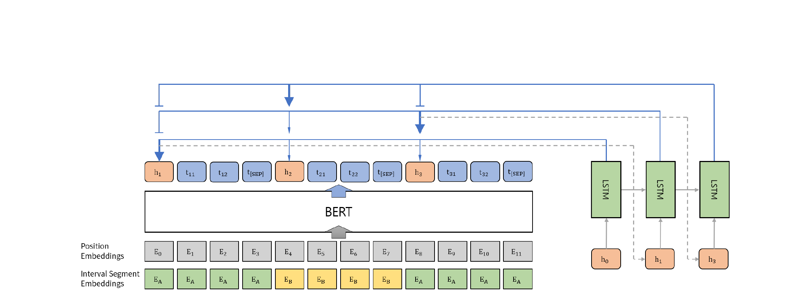

Summary Level Training of Sentence Rewriting for Abstractive Summarization
The Second Workshop on New Frontiers in Summarization (NewSum 2019) at EMNLP-IJCNLP 2019
Sanghwan Bae, Taeuk Kim, Jihoon Kim, Sang-goo Lee
One-Line Summary
An improved Sentence Rewriting framework for abstractive summarization that introduces summary-level ROUGE optimization through reinforcement learning and a BERT-based extractor, achieving state-of-the-art results on CNN/Daily Mail and New York Times datasets.

Figure 1. Overview of the extractor network architecture with BERT and interval segment embeddings.
Background & Motivation
Abstractive summarization aims to produce concise, natural-language summaries of documents. The Sentence Rewriting paradigm (Chen & Bansal, 2018) is a two-stage approach that bridges extractive and abstractive methods: first, an extractor selects the most salient sentences from the source document; then, an abstractor rewrites each extracted sentence into a more concise form. The final summary is the concatenation of these rewritten sentences.
While this decomposition is elegant, existing Sentence Rewriting models suffer from two critical limitations:
Training-Evaluation Mismatch: The extractor is trained using sentence-level ROUGE rewards -- each sentence is independently matched to a reference sentence and rewarded based on its individual ROUGE score. However, the final model is evaluated using summary-level ROUGE, which compares the full generated summary against the full reference. Greedily selecting sentences with the highest individual scores can produce redundant summaries with overlapping information, leading to suboptimal summary-level performance.
Limited Contextual Understanding: Prior extractors (e.g., based on temporal convolutional networks) have limited capacity to capture long-range dependencies and rich semantic relationships across sentences, hindering their ability to identify truly salient content in the context of the entire document.
Proposed Method
The proposed model retains the two-module architecture -- an extractor and an abstractor -- but introduces substantial improvements to both components and the training procedure:
1
BERT-based Extractor Encoder
BERT is adapted as the document encoder. A [CLS] token is inserted before each sentence to serve as the sentence-level representation. To handle multi-sentence documents that exceed BERT's typical input format, interval segment embeddings are introduced: sentences are alternately assigned segment A and segment B embeddings (analogous to BERT's two-segment design), allowing the model to distinguish sentence boundaries while processing the full document. The resulting [CLS] representations capture rich, contextualized sentence semantics.
2
LSTM Pointer Network Decoder
An LSTM-based pointer network serves as the extraction decoder. At each time step, it attends over all sentence representations from the BERT encoder and selects one sentence. The LSTM hidden state carries information about previously extracted sentences, enabling the decoder to avoid redundant selections and make contextually informed extraction decisions sequentially.
3
Summary-Level RL Training (A2C)
The extractor is trained using the Advantage Actor-Critic (A2C) algorithm to directly maximize summary-level ROUGE-L F1 scores. The key insight is that the reward is computed on the full summary (all extracted-then-rewritten sentences concatenated), aligning the training objective with the evaluation metric. To address the sparse reward problem (reward is only available after all sentences are extracted), reward shaping provides dense intermediate signals: at each extraction step t, the agent receives an incremental reward equal to the difference in summary-level ROUGE when adding the t-th sentence.
4
Abstractor with Copy Mechanism
The abstractor is a standard sequence-to-sequence model with attention and a copy mechanism (pointer-generator). It is trained independently on (extracted sentence, reference sentence) pairs using maximum likelihood. At inference time, it rewrites each extracted sentence into a more concise abstractive form.
5
Redundancy Control: Trigram Blocking & Reranking
Two mechanisms reduce redundancy: (1) Trigram blocking at the extractor level prevents selecting sentences that share trigrams with already-selected sentences; (2) Reranking at the abstractor level generates multiple candidate rewrites via beam search, then selects the candidate that maximizes ROUGE with respect to the other summary sentences while minimizing repetition.
Experimental Results
The model is evaluated on three benchmark datasets: CNN/Daily Mail (non-anonymized version), New York Times (NYT50), and DUC-2002. Results demonstrate consistent improvements from both the BERT-based extractor and summary-level RL training.
CNN/Daily Mail
Model (CNN/Daily Mail)
ROUGE-1
ROUGE-2
ROUGE-L
Sentence Rewrite (Chen & Bansal, 2018)
40.88
17.80
38.54
Bottom-Up (Gehrmann et al., 2018)
41.22
18.68
38.34
BERTSUM (Liu, 2019) -- extractive
43.25
20.24
39.63
BERT-ext + abs (ours)
40.14
17.87
37.83
BERT-ext + abs + RL (ours)
41.58
18.87
39.34
BERT-ext + abs + RL + rerank (ours)
41.90
19.08
39.64
NYT50 & DUC-2002
Model
Dataset
ROUGE-1
ROUGE-2
ROUGE-L
BERT-ext + abs + RL + rerank (ours)
NYT50
46.63
26.76
43.38
BERT-ext + abs + RL + rerank (ours)
DUC-2002
43.39
19.38
40.14
Ablation & Analysis
New SOTA for Abstractive: BERT-ext + abs + RL + rerank achieves the best abstractive summarization results on CNN/Daily Mail (R-AVG 33.54), outperforming the previous Sentence Rewriting baseline by a significant margin.
Strong Extractor: The BERT-based extractor alone (BERT-ext) outperforms all previous extractors within the Sentence Rewriting framework (R-1: 42.29, R-2: 19.38, R-L: 38.63), confirming the value of BERT's pretrained representations and interval segment embeddings for sentence selection.
RL Closes the Gap: Summary-level RL training improves R-1 by +1.44, R-2 by +1.00, and R-L by +1.51 over the non-RL baseline, demonstrating that aligning the training objective with the evaluation metric yields substantial gains.
Reranking Adds Refinement: The reranking step provides further improvements (+0.32 R-1, +0.21 R-2, +0.30 R-L), showing that selecting among multiple abstractor outputs can reduce redundancy and improve overall quality.
DUC-2002 Generalization: The model outperforms baselines with large margins on DUC-2002 (R-1: 43.39, R-2: 19.38, R-L: 40.14), demonstrating strong out-of-domain generalization from CNN/DM training.
Human Evaluation: In a human study, the full model achieves the highest total score (127) across relevance (66) and readability (61), confirming that summary-level optimization produces not only higher ROUGE but also more coherent and informative summaries as judged by human annotators.
Why It Matters
This work addresses a fundamental problem in extractive-abstractive summarization: the disconnect between how models are trained (sentence-level optimization) and how they are evaluated (summary-level metrics). The key contributions are threefold:
Principled Training Alignment: By using summary-level ROUGE as the RL reward with reward shaping for dense supervision, the extractor learns to select sentence combinations that collectively form the best summary, rather than greedily picking individually high-scoring but potentially redundant sentences.
Effective Use of Pretrained Models: The BERT-based extractor with interval segment embeddings demonstrates that large pretrained language models can be successfully adapted for document-level sentence extraction, providing rich contextual representations that significantly improve selection quality.
Practical Framework: The modular extractor-abstractor design allows each component to be trained and improved independently. The combination of RL training, trigram blocking, and reranking forms a comprehensive approach to reducing redundancy at multiple stages of the pipeline, setting a strong foundation for subsequent work on abstractive summarization.